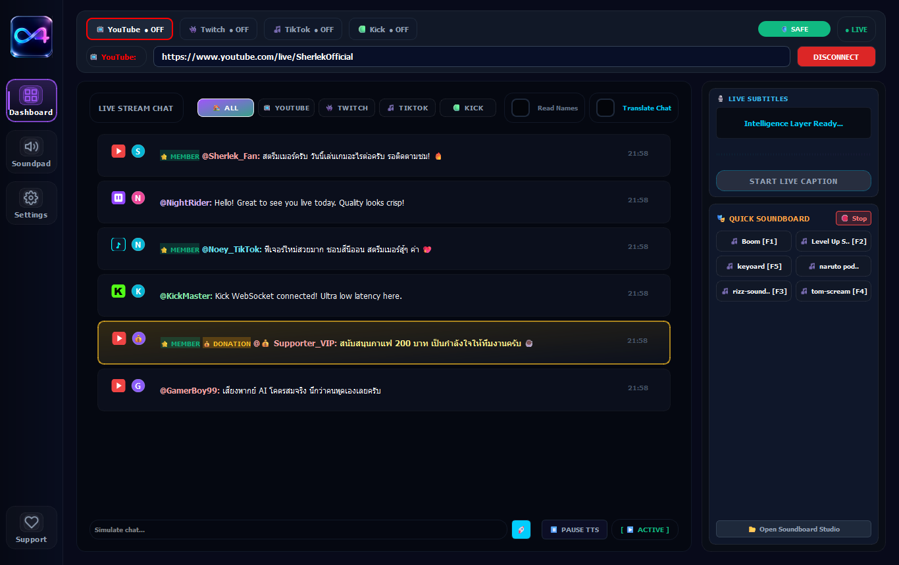
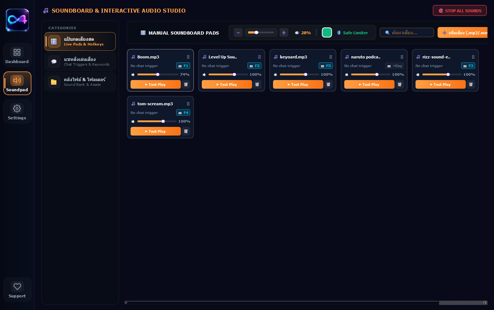
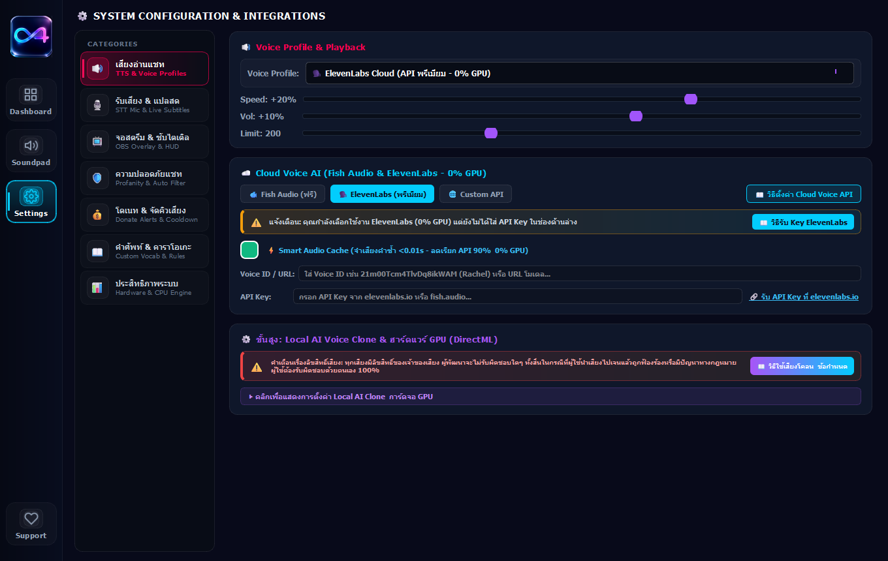
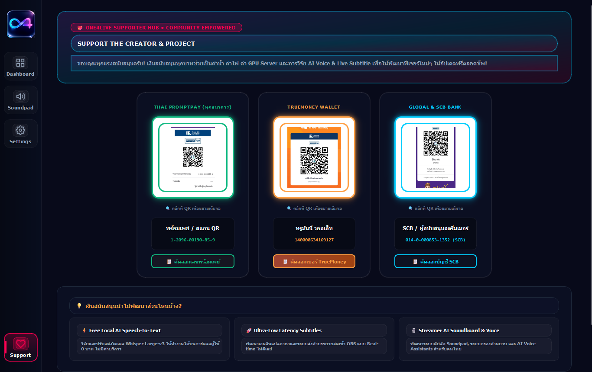

The Only AI Assistant Your Stream Ever Needs.
Unify YouTube, Twitch, TikTok, and Kick with live AI translation, adaptive Thai-Karaoke TTS, OBS Subtitle Custom Studio, and Drag & Drop Soundboard built for serious streamers.
Google Drive path: https://drive.google.com/file/d/1HQGCmLu6CsuOTcp0d1RuLARGWPWdR1xU/view?usp=sharing
Mirror note: MediaFire mirror is not available because the package is too large. Please use Google Drive.
🛡️ 100% Protected Logic. If Windows Defender flags the app, select 'Run Anyway' to proceed.
4Live Platforms (YT, TW, TT, KC)
18+Translation Languages
1:1OBS Subtitle Studio

Watch how to use One4Live.
Start here if you want to see the setup flow, core controls, and live workflow before downloading.
Scroll through the real One4Live interface.
These screenshots show the actual streamer workflow: dashboard, soundboard, system configuration, OBS tools, karaoke rules, and SFX controls.



One command center for every live audience.
Connect multiple platforms at the same time while keeping each chat visually separated with brand-matched signal colors.
YT
YouTube
Track guide viewers, live comments, and community engagement without losing stream focus.
TW
Twitch
Read fast chat, filter signals, and keep supporter moments clean during high-speed sessions.
TT
TikTok
Bring short-form live energy into the same dashboard with platform-aware message routing.
KC
Kick
Realtime WebSocket chat connection for fast-growing Kick streamer communities.
Built around the secret sauce streamers actually feel.
One4Live is not a generic chat reader. It is tuned for Thai creators, multilingual audiences, and live-show pressure.
01
Multi-Platform Hub
YouTube, Twitch, TikTok, and Kick run together with distinct badges and anti-spam filtering.
02
OBS Subtitle Studio
1:1 Chromium preview, Google Fonts, glow borders, dual-language subtitles, and live WebSocket sync.
03
18+ Languages AI Router
Independent spoken/translated language routing with 1-click fast swap button and live TTS.
04
Soundboard Drag & Drop
Dedicated Soundboard Studio with 1-click MP3 import, drag-and-drop reordering, and dashboard sync.
05
Adaptive Karaoke TTS
Natural voice synthesis, 200+ phonetic rules, profanity filter, and donation alert auto-pause.
06
Zero-Setup Standalone
Self-contained Onefile executable with bundled FFmpeg/FFplay. 100% persistent auto-saved settings.
Professional controls for real live pressure.
The interface is dense, fast, and designed for repeated streamer operation: connect, filter, translate, speak, stop.
AI Translation Sync (18+ Langs)Dashboard, OBS subtitles, and TTS stay aligned.
ACTIVEOBS 1:1 Live Subtitle StudioChromium web engine preview with Google Fonts & Dual Subtitles.
SYNCEDSoundboard Drag & DropVisual sound reordering with 1-click MP3/WAV import.
READYStreamer Safety & Donation QueueProfanity filter, duplicate suppression, and alert pause.
ARMEDUpgrade your live control room today.
Download One4Live V2.3 Final and run a smarter, cleaner, more interactive stream across every platform.
Google Drive path: https://drive.google.com/file/d/1HQGCmLu6CsuOTcp0d1RuLARGWPWdR1xU/view?usp=sharing
Mirror note: MediaFire mirror is not available because the package is too large. Please use Google Drive.
🛡️ 100% Protected Logic. If Windows Defender flags the app, select 'Run Anyway' to proceed.